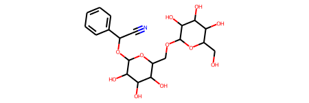
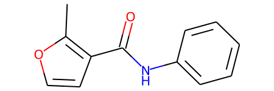
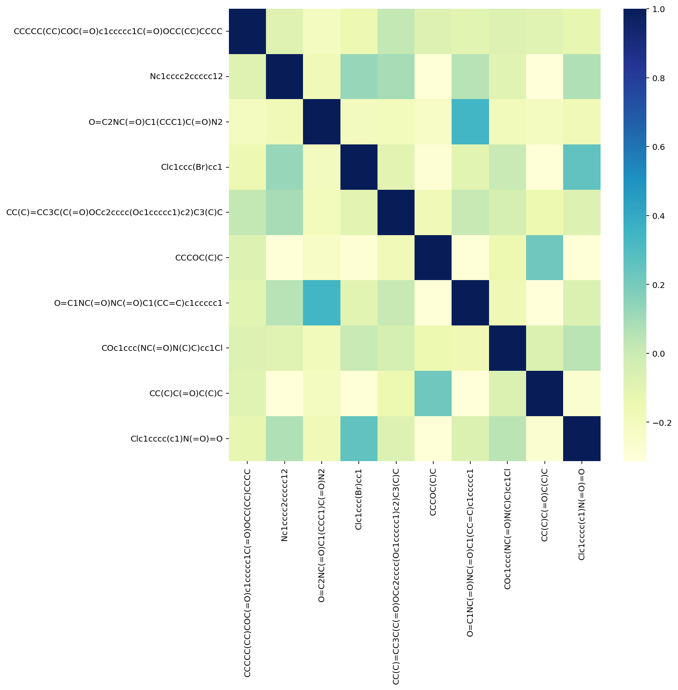

import os
import pandas as pd
import numpy as np
import tqdm.notebook as tqdmFingerprints are a low resolution representations of molecules. Historically they were devised, primarily, as a representation scheme to better estimate the similarity of molecules. Currently, besides the similairty and diversity estimations, fingerprints are the workhorses for most of the data-driven predictive models.
Key papers in this field: * Willett, Peter, John M. Barnard, and Geoffrey M. Downs. “Chemical similarity searching.” Journal of chemical information and computer sciences 38.6 (1998): 983-996 * PubChem Atom Environments
Blogs from Greg Landrum (RDKit creator): * Bit collisions in Rdkit * Simulating count fingerprints * Number of Fingerprint Bits * Number of unique fingerprint bits * RSC Open Science Standardization Talk
Resources to consider: * Depth-first on Fingerprints * Applied AI for materials online course by Logan Ward (Argonne National Lab) * Example scripts in GHOST implementation
# RDkit imports
import rdkit
from rdkit import Chem
from rdkit.Chem import Draw
from rdkit.Chem.Draw import IPythonConsole #Needed to show molecules
print(rdkit.__version__)
Chem.WrapLogs()
lg = rdkit.RDLogger.logger()
lg.setLevel(rdkit.RDLogger.CRITICAL)2021.09.3#----- PLOTTING PARAMS ----#
import matplotlib.pyplot as plt
from matplotlib.pyplot import cm
# High DPI rendering for mac
%config InlineBackend.figure_format = 'retina'
# "Infinite" DPI vector output -- overkill
#%config InlineBackend.figure_format = 'svg'
# Plot matplotlib plots with white background:
%config InlineBackend.print_figure_kwargs={'facecolor' : "w"}# Load a test dataset
url = 'https://raw.githubusercontent.com/pgg1610/data_files/main/delaney.smi'
x = pd.read_csv(url, header=0, names=['SMILES', 'logP'])x.head(3)| SMILES | logP | |
|---|---|---|
| 0 | OCC3OC(OCC2OC(OC(C#N)c1ccccc1)C(O)C(O)C2O)C(O)... | -0.77 |
| 1 | Cc1occc1C(=O)Nc2ccccc2 | -3.30 |
| 2 | CC(C)=CCCC(C)=CC(=O) | -2.06 |
from rdkit.Chem import PandasTools
PandasTools.AddMoleculeColumnToFrame(x, smilesCol='SMILES')x.sample(2)| SMILES | logP | ROMol | |
|---|---|---|---|
| 1076 | CCCC(O)CCC | -1.40 | ![Mol]() |
| 469 | Cc1cccc(C)c1O | -1.29 | ![Mol]() |
Types of fingerprints to consider:
https://www.rdkit.org/docs/GettingStartedInPython.html#list-of-available-fingerprints
The types of atom pairs and torsions are normal (default), hashed and bit vector (bv). The types of the Morgan fingerprint are bit vector (bv, default) and count vector (count).
Descriptor based fingerprints - more information here
Count or binary-based fingerprints
2.1. Circular Fingerprints (Morgan) - Extended Connectivity (ECFP) or Feature Morgan
2.2. Atom pair
2.3. Torsion
2.4. MACCS Keys
2.5. RDkit
2.6. Avalon Tools
Data-driven fingerprints
Many of the RDKit’s fingerprints are available as either bit vectors or count vectors.
Bit vectors track whether or not features appear in a molecule while count vectors track the number of times each feature appears. It seems intuitive that a count vector is a better representation of similarity than bit vectors, but we often use bit vector representations for computational expediency - bit vectors require less memory and are much faster to operate on.
In the newer version of Rdkit there is are functions to simulate counts from bit vector.
Broadly there are two ways of invoking the fingerprints:
#Instance
rdMolDescriptors.GetMorganFingerprint()
AllChem.GetMorganFingerprint()#Generator
fpgen = rdFingerprintGenerator.GetMorganGenerator()
fpgen.GetFingerprint(x)1. Morgan fingerprints
Some discussion on Bit Collisions here: https://rdkit.blogspot.com/2014/02/colliding-bits.html
Unfolded type or Sparse type
from rdkit.Chem import AllChem
from rdkit import DataStructsmol_obj = x.iloc[42]['ROMol']mol_obj
#Default class to generate FPs - this will make it unfolded by default
morgan_fp_default = AllChem.GetMorganFingerprint(mol_obj, radius = 2) # Counts are used by default
#Check the use_counts in Get Morgan Fingerprint this is used by default
morgan_fp_default_counts = AllChem.GetMorganFingerprint(mol_obj, radius = 2, useCounts=True) # This is used by default
#Feature-based invariants, similar to those used for the FCFP fingerprints, can also be used.
# https://www.rdkit.org/docs/GettingStartedInPython.html#feature-definitions-used-in-the-morgan-fingerprints
# Here the atoms are grouped into functional classes before substructures are enumerated
morgan_fp_features = AllChem.GetMorganFingerprint(mol_obj, 2, useFeatures=True)morgan_fp_default<rdkit.DataStructs.cDataStructs.UIntSparseIntVect at 0x2b5a80661ad0>You can also use the rdMolDescriptor module in Rdkit for generating the fingerprints. What is the advatange of either?
from rdkit.Chem import rdMolDescriptorsmorgan_fp_default_rdmoldesc = rdMolDescriptors.GetMorganFingerprint(mol_obj, radius=2)morgan_fp_default_rdmoldesc.GetNonzeroElements(){10565946: 3,
123085743: 1,
354000409: 1,
864942730: 3,
1451062712: 1,
2004727027: 2,
2119439498: 2,
2132511834: 2,
2142032900: 1,
2296493092: 2,
2422851564: 1,
2809361097: 2,
2968968094: 3,
2976816164: 1,
3038691098: 1,
3113921857: 2,
3217380708: 3,
3255046070: 1}To get a list of bits being ‘active’ in the FPs:
DataStructs.cDataStructs.UIntSparseIntVect.GetNonzeroElements(morgan_fp_default){10565946: 3,
123085743: 1,
354000409: 1,
864942730: 3,
1451062712: 1,
2004727027: 2,
2119439498: 2,
2132511834: 2,
2142032900: 1,
2296493092: 2,
2422851564: 1,
2809361097: 2,
2968968094: 3,
2976816164: 1,
3038691098: 1,
3113921857: 2,
3217380708: 3,
3255046070: 1}DataStructs.cDataStructs.UIntSparseIntVect.GetNonzeroElements(morgan_fp_default) == morgan_fp_default_rdmoldesc.GetNonzeroElements()TrueDataStructs.cDataStructs.UIntSparseIntVect.GetLength(morgan_fp_default)42949672952**324294967296morgan_fp_default_counts<rdkit.DataStructs.cDataStructs.UIntSparseIntVect at 0x2b5a8066e620>DataStructs.cDataStructs.UIntSparseIntVect.GetNonzeroElements(morgan_fp_default_counts){10565946: 3,
123085743: 1,
354000409: 1,
864942730: 3,
1451062712: 1,
2004727027: 2,
2119439498: 2,
2132511834: 2,
2142032900: 1,
2296493092: 2,
2422851564: 1,
2809361097: 2,
2968968094: 3,
2976816164: 1,
3038691098: 1,
3113921857: 2,
3217380708: 3,
3255046070: 1}morgan_fp_features<rdkit.DataStructs.cDataStructs.UIntSparseIntVect at 0x2b5a8066e7b0>DataStructs.cDataStructs.UIntSparseIntVect.GetNonzeroElements(morgan_fp_features){0: 7,
1: 2,
2: 3,
613660066: 1,
614173363: 2,
1250412363: 2,
2407443532: 1,
2419043133: 1,
3064147743: 1,
3205496824: 3,
3208849907: 1,
3664239091: 2,
3766528779: 2,
3766532888: 3,
4203103696: 1}DataStructs.cDataStructs.UIntSparseIntVect.GetLength(morgan_fp_features)4294967295Folded type
#Counts Folded FPs
morgan_fp_counts_folded = AllChem.GetMorganFingerprint(mol_obj, 2, useCounts=True, nBits=1024) # This will throw an error - cannot fold the full FPs instead call them separatelyArgumentError: Python argument types in
rdkit.Chem.rdMolDescriptors.GetMorganFingerprint(Mol, int)
did not match C++ signature:
GetMorganFingerprint(RDKit::ROMol mol, unsigned int radius, boost::python::api::object invariants=[], boost::python::api::object fromAtoms=[], bool useChirality=False, bool useBondTypes=True, bool useFeatures=False, bool useCounts=True, boost::python::api::object bitInfo=None, bool includeRedundantEnvironments=False)Count-based Morgan FPs
#Hashed FPs - using counts
morgan_fp_hashed_folded = AllChem.GetHashedMorganFingerprint(mol_obj, 2, nBits=1024) #Default is 2048 and be used without folding here morgan_fp_hashed_folded<rdkit.DataStructs.cDataStructs.UIntSparseIntVect at 0x2b5a8066ef30>DataStructs.cDataStructs.UIntSparseIntVect.GetLength(morgan_fp_hashed_folded)1024DataStructs.cDataStructs.UIntSparseIntVect.GetNonzeroElements(morgan_fp_hashed_folded){4: 1,
36: 3,
90: 2,
138: 2,
243: 2,
314: 3,
321: 2,
356: 3,
440: 1,
537: 1,
650: 3,
713: 2,
794: 1,
926: 3,
943: 1,
950: 1,
1004: 1}Bit-vector based Morgan FP
#Folded FP bit vectors as per the size of the bits
morgan_fp_bit_vect = AllChem.GetMorganFingerprintAsBitVect(mol_obj, 2, nBits=1024)morgan_fp_bit_vect<rdkit.DataStructs.cDataStructs.ExplicitBitVect at 0x2b5a8066e4e0>DataStructs.cDataStructs.ExplicitBitVect.GetNumBits(morgan_fp_bit_vect)1024DataStructs.cDataStructs.ExplicitBitVect.GetNumOnBits(morgan_fp_bit_vect)17Converting to friendly data type
morgan_fp_hashed_folded_array = np.zeros((1,))
morgan_fp_bit_vect_array = np.zeros((1,))DataStructs.ConvertToNumpyArray(morgan_fp_hashed_folded, morgan_fp_hashed_folded_array) np.nonzero(morgan_fp_hashed_folded_array)(array([ 4, 36, 90, 138, 243, 314, 321, 356, 440, 537, 650,
713, 794, 926, 943, 950, 1004]),)np.unique(morgan_fp_hashed_folded_array)array([0., 1., 2., 3.])morgan_fp_bit_vect<rdkit.DataStructs.cDataStructs.ExplicitBitVect at 0x2b5a8066e4e0>DataStructs.ConvertToNumpyArray(morgan_fp_bit_vect, morgan_fp_bit_vect_array) np.nonzero(morgan_fp_bit_vect_array)(array([ 4, 36, 90, 138, 243, 314, 321, 356, 440, 537, 650,
713, 794, 926, 943, 950, 1004]),)np.unique(morgan_fp_bit_vect_array)array([0., 1.])Converting the Morgan FPs between counts and bit-wise representation: https://stackoverflow.com/questions/54809506/how-can-i-compute-a-count-morgan-fingerprint-as-numpy-array
fp = AllChem.GetMorganFingerprintAsBitVect(mol_obj, 2, nBits=1024)
array = np.zeros((0, ), dtype=np.int16)
DataStructs.ConvertToNumpyArray(fp, array)arrayarray([0, 0, 0, ..., 0, 0, 0], dtype=int16)bitstring = "".join(array.astype(str))
fp2 = DataStructs.cDataStructs.CreateFromBitString(bitstring)fp2<rdkit.DataStructs.cDataStructs.ExplicitBitVect at 0x2b5a80688b20>list(fp.GetOnBits()) == list(fp2.GetOnBits())Truefp3 = AllChem.GetHashedMorganFingerprint(mol_obj, 2, nBits=1024)
array = np.zeros((0,), dtype=np.int8)
DataStructs.ConvertToNumpyArray(fp3, array)
print(array.nonzero())(array([ 4, 36, 90, 138, 243, 314, 321, 356, 440, 537, 650,
713, 794, 926, 943, 950, 1004]),)Alternate way:
def numpy_2_fp(array):
fp = DataStructs.cDataStructs.UIntSparseIntVect(len(array))
for ix, value in enumerate(array):
fp[ix] = int(value)
return fp
fp4 = numpy_2_fp(array)fp3.GetNonzeroElements() == fp4.GetNonzeroElements()True2. MACCS
There is a SMARTS-based implementation of the 166 public MACCS keys.
from rdkit.Chem import MACCSkeysmaccs_fp = MACCSkeys.GenMACCSKeys(mol_obj)maccs_fp<rdkit.DataStructs.cDataStructs.ExplicitBitVect at 0x2b5a99f013a0>maccs_fp_array = np.zeros((0,))DataStructs.ConvertToNumpyArray(maccs_fp, maccs_fp_array) maccs_fp_array.shape(167,)np.nonzero(maccs_fp_array)(array([ 11, 37, 43, 53, 66, 77, 80, 89, 90, 91, 92, 97, 98,
105, 106, 110, 112, 117, 118, 120, 121, 127, 131, 136, 137, 142,
143, 146, 147, 151, 154, 156, 158, 159, 161, 163, 164, 165]),)np.unique(maccs_fp_array)array([0., 1.])3. Atom Pairs
from rdkit.Chem.AtomPairs import Pairs, Torsions
ap_full = Pairs.GetAtomPairFingerprint(mol_obj) # Fully unfolded ones - The standard form is as fingerprint including counts for each bit instead of just zeros and ones
ap_bit = Pairs.GetAtomPairFingerprintAsBitVect(mol_obj) # Bit vector
ap_counts = Pairs.GetHashedAtomPairFingerprint(mol_obj, nBits=1024) #These are count based AP, default = 2048ap_full<rdkit.DataStructs.cDataStructs.IntSparseIntVect at 0x2b5a9a0e82b0>DataStructs.cDataStructs.IntSparseIntVect.GetLength(ap_full)8388608DataStructs.cDataStructs.IntSparseIntVect.GetNonzeroElements(ap_full){558145: 2,
558146: 1,
590913: 2,
590914: 1,
705602: 4,
705603: 2,
705604: 2,
705605: 1,
705665: 2,
705667: 1,
705890: 3,
1082435: 4,
1082436: 2,
1082498: 2,
1082721: 4,
1082723: 2,
1083458: 1,
1721411: 4,
1721412: 2,
1721413: 2,
1721414: 1,
1721474: 2,
1721476: 1,
1721697: 3,
1721699: 6,
1722434: 4,
1722436: 2,
1723684: 3}ap_bit<rdkit.DataStructs.cDataStructs.SparseBitVect at 0x2b5a99f2ca70>ap_bit_array = np.zeros((0,), dtype=np.int32)DataStructs.ConvertToNumpyArray(ap_bit, ap_bit_array) ArgumentError: Python argument types in
rdkit.DataStructs.cDataStructs.ConvertToNumpyArray(SparseBitVect, numpy.ndarray)
did not match C++ signature:
ConvertToNumpyArray(RDKit::SparseIntVect<unsigned long> bv, boost::python::api::object destArray)
ConvertToNumpyArray(RDKit::SparseIntVect<unsigned int> bv, boost::python::api::object destArray)
ConvertToNumpyArray(RDKit::SparseIntVect<long> bv, boost::python::api::object destArray)
ConvertToNumpyArray(RDKit::SparseIntVect<int> bv, boost::python::api::object destArray)
ConvertToNumpyArray(RDKit::DiscreteValueVect bv, boost::python::api::object destArray)
ConvertToNumpyArray(ExplicitBitVect bv, boost::python::api::object destArray)ap_counts_array = np.array((1,))DataStructs.ConvertToNumpyArray(ap_counts, ap_counts_array) ap_counts_array.shape(1024,)4. RDKIT Fingerprint
a Daylight-like fingerprint based on hashing molecular subgraphs
rdkit_fp = Chem.RDKFingerprint(mol_obj) rdkit_fp<rdkit.DataStructs.cDataStructs.ExplicitBitVect at 0x2b5aa2582350>rdkit_fp_array = np.zeros((0,))DataStructs.ConvertToNumpyArray(rdkit_fp, rdkit_fp_array) np.unique(rdkit_fp_array)array([0., 1.])5. Descriptors
Compute the RDKit2D fingerprint (200 topological properties) using the descriptastorus library. Adopted from https://github.com/rinikerlab/GHOST/blob/main/notebooks/library_example.ipynb
from descriptastorus.descriptors import rdDescriptors, rdNormalizedDescriptorsCan be looped with different methods
fps1 = [Chem.RDKFingerprint(x, fpSize=1024, minPath=1, maxPath=4) for x in suppl]
fps2 = [Chem.GetHashedMorganFingerprint(x, radius=2, nBits=1024) for x in suppl]
fps3 = [Chem.GetMorganFingerprint(x, radius=2, useCounts= True) for x in suppl]
fps4 = [Pairs.GetAtomPairFingerprintAsIntVect(x) for x in suppl]
arr = np.zeros((4,1024), dtype = np.int8)
for i in range(0,len(suppl)):
DataStructs.ConvertToNumpyArray(fps2[i], arr[i])
print(arr)Combine it together
General purpose function to generate morgan fingerprints using BaseEstimator and TransformerMixin from Scikit-learn to use all the wonderful scikit-learn routines
from sklearn.base import BaseEstimator, TransformerMixin
from rdkit.Chem import rdFingerprintGenerator
from rdkit.Chem import AllChem
from rdkit import Chem, DataStructs
from rdkit.Chem import MACCSkeys
from rdkit.Chem.AtomPairs import Pairs, Torsions
from rdkit import DataStructs
from rdkit.Chem import rdMolDescriptors
def mol_to_smiles(mol: Chem.Mol, canonical: bool = True) -> str:
"""Generate Smiles from mol.
:param mol: the input molecule
:param canonical: whether to return the canonical Smiles or not
:return: The Smiles of the molecule (canonical by default). NAN for failed molecules."""
if mol is None:
return np.nan
try:
smi = Chem.MolToSmiles(mol, canonical=canonical)
return smi
except:
return np.nan
def smiles_to_mol(smiles: str) -> Chem.Mol:
"""Generate a RDKit Molecule from a Smiles.
:param smiles: the input string
:returns: The RDKit Molecule. If the Smiles parsing failed, NAN is returned instead.
"""
try:
mol = Chem.MolFromSmiles(smiles)
if mol is not None:
return mol
return np.nan
except:
return np.nan
def transform_to_mol(smiles: list, smiles_column : str = None, to_binary : bool = False) -> Chem.Mol:
"""
Converts a list of smiles to RDKit mol object.
Provision to preserve molecules in form a binary object
Refer: https://www.rdkit.org/docs/GettingStartedInPython.html#preserving-molecules
"""
try:
if isinstance(smiles, list):
mol_ls = [Chem.MolFromSmiles(x) for x in smiles]
return mol_ls
elif isinstance(smiles, pd.DataFrame):
smiles = smiles.copy() # To ensure I am using another instance
smiles["Mol"] = smiles.apply(Chem.MolFromSmiles)
return smiles
elif isinstance(smiles, str):
mol_ls = Chem.MolFromSmiles(smiles)
return mol_ls
else:
return np.nan
except:
return np.nan
if to_binary:
if type(smiles) == list:
binary_out = [mol.ToBinary() for mol in mol_ls] # m2 = Chem.Mol(binStr) to convert back
else:
binary_out = mol_ls.ToBinary()
return binary_out
# Descriptor generation from RDKIT
def compute_fingerprint(smiles: str, type_fp: str = 'Morgan', sub_type: str = 'bv', radius: int = 2, num_bits: int = 2048) -> np.ndarray:
"""
Generates a fingerprint for a smiles string or mol object.
fp_type = {'Morgan', 'Morgan_sparse', 'FeatMorgan', 'FeatMorgan_sparse', 'AtomPair', 'AtomPair_sparse', 'RDkit', 'TT'}
sub_type = {'sparse', 'bv', 'counts', 'object'}
:param smiles: A smiles string for a molecule.
:param radius: The radius of the fingerprint.
:param num_bits: The number of bits to use in the fingerprint.
:param use_counts: Whether to use counts or just a bit vector for the fingerprint
:return: A 1-D numpy array containing the morgan fingerprint.
"""
if isinstance(smiles, str):
mol = Chem.MolFromSmiles(smiles)
else:
mol = smiles
if type_fp == 'Morgan':
if sub_type == 'sparse' or sub_type == 'object':
fp_vect = rdMolDescriptors.GetMorganFingerprint(mol, radius) # Counts by default
if sub_type == 'counts':
fp_vect = rdMolDescriptors.GetHashedMorganFingerprint(mol, radius, nBits=num_bits)
if sub_type == 'bv':
fp_vect = rdMolDescriptors.GetMorganFingerprintAsBitVect(mol, radius, nBits=num_bits)
if type_fp == 'FeatMorgan':
if sub_type == 'sparse' or sub_type == 'object':
fp_vect = rdMolDescriptors.GetMorganFingerprint(mol, radius, useFeatures=True)
if sub_type == 'counts':
fp_vect = rdMolDescriptors.GetHashedMorganFingerprint(mol, radius, nBits=num_bits, useFeatures=True)
if sub_type == 'bv':
fp_vect = rdMolDescriptors.GetMorganFingerprintAsBitVect(mol, radius, nBits=num_bits, useFeatures=True)
if type_fp == 'AtomPair':
if sub_type == 'sparse' or sub_type == 'object':
fp_vect = rdMolDescriptors.GetAtomPairFingerprint(mol)
if sub_type == 'counts':
fp_vect = rdMolDescriptors.GetHashedAtomPairFingerprint(mol, nBits=num_bits)
if sub_type == 'bv':
fp_vect = rdMolDescriptors.GetHashedAtomPairFingerprintAsBitVect(mol, nBits=num_bits)
if type_fp == 'MACCS':
fp_vect = MACCSkeys.GenMACCSKeys(mol)
if type_fp == 'Rdkit':
fp_vect = Chem.RDKFingerprint(mol)
if type_fp == 'TT':
if sub_type == 'counts':
fp_vect = rdMolDescriptors.GetHashedTopologicalTorsionFingerprint(mol, nBits=num_bits) #2048 by default
if sub_type == 'bv':
fp_vect = rdMolDescriptors.GetHashedTopologicalTorsionFingerprintAsBitVect(mol, nBits=num_bits)
# Compute the RDKit2D fingerprint (200 topological properties) using the descriptastorus library
# Adopted from https://github.com/rinikerlab/GHOST/blob/main/notebooks/library_example.ipynb
if type_fp == 'Rdkit2D' or type_fp == 'Rdkit2D_norm':
try:
from descriptastorus.descriptors import rdDescriptors, rdNormalizedDescriptors
generator = rdNormalizedDescriptors.RDKit2DNormalized() if type_fp == 'Rdkit2D_norm' else rdDescriptors.RDKit2D()
# process needs input as smiles
assert isinstance(smiles, str)
smi = smiles
data = generator.process(smi)
if data[0] == True:
data.pop(0)
if data[0] == False:
data.pop(0)
data = np.float32(data)
data[np.isposinf(data)] = np.finfo('float32').max
data[np.isneginf(data)] = np.finfo('float32').min
fp_vect = np.nan_to_num(data)
except:
print('Failed to process the smiles using RDKit 2D features.')
fp_vect = np.zeros(shape=(200))
if sub_type == 'object':
return fp_vect
elif sub_type == 'sparse':
try:
key_dict, len_arry = fp_vect.GetNonzeroElements() , fp_vect.GetLength()
sparse_row = np.zeros(len(list(key_dict.keys())))
sparse_col = np.array(list(key_dict.keys()))
sparse_data = np.array(list(key_dict.values()), dtype=np.int16)
fp = sp.sparse.csr_matrix((sparse_data, (sparse_row, sparse_col)), shape=(1, len_arry))
assert isinstance(fp, sp.sparse.csr_matrix)
except:
key_dict, len_arry = fp_vect.GetNumOnBits(), fp_vect.GetNumBits()
key_dict, len_arry = fp
sparse_row = np.zeros(len(list(key_dict.keys())))
sparse_col = np.array(list(key_dict.keys()))
sparse_data = np.array(list(key_dict.values()), dtype=np.int16)
fp = sp.sparse.csr_matrix((sparse_data, (sparse_row, sparse_col)), shape=(1, len_arry))
assert isinstance(fp, sp.sparse.csr_matrix)
else:
try:
fp = np.zeros((0,), dtype=np.int16)
DataStructs.ConvertToNumpyArray(fp_vect, fp)
except:
fp = fp_vect
return fp
## Have a dataframe output like Logan Ward does?
class FingerprintTransformer(BaseEstimator):
"""Class that converts SMILES strings to fingerprint vectors"""
def __init__(self, smiles_column: str = 'SMILES', type_fp: str = 'Morgan', sub_type: str = 'bv', radius: int = 2, num_bits: int = 1024):
self.smiles_column = smiles_column
self.type_fp = type_fp
self.sub_type = sub_type
self.num_bits = num_bits
self.radius = radius
def fit(self, X, y=None):
return self # Do need to do anything
def transform(self, X, y=None):
"""
Compute the fingerprints
:param X: List of SMILES strings
:return: Array of fingerprints
"""
if isinstance(X, list):
X_input = transform_to_mol(X) if isinstance(X[0], Chem.Mol) else X
fing = [ compute_fingerprint(m, type_fp = self.type_fp, sub_type = self.sub_type, radius = self.radius, num_bits = self.num_bits) for m in X_input ]
return np.vstack(fing)
elif isinstance(X, pd.DataFrame):
X = X.copy() # To ensure I am changing a separate array instance
X_mol_list = list(X[self.smiles_column])
fing = []
for i, entry in enumerate(X_mol_list):
fing.append( compute_fingerprint(entry, type_fp = self.type_fp, sub_type = self.sub_type, radius = self.radius, num_bits = self.num_bits) )
if self.type_fp == 'Rdkit2D' or self.type_fp == 'Rdkit2D_norm':
X['{0}'.format(self.type_fp)] = fing
else:
X['{0}-{1}'.format(self.type_fp, self.sub_type)] = fing
return X
else: #If it is a single entry
X_mol = X if isinstance(X, str) else transform_to_mol(X)
fing = compute_fingerprint(X_mol, type_fp = self.type_fp, sub_type = self.sub_type, radius = self.radius, num_bits = self.num_bits)
return fingfp_transform = FingerprintTransformer(num_bits=1024,
radius=3,\
smiles_column = 'SMILES',\
sub_type = 'counts',\
type_fp = 'Morgan')fp_transform.get_params(){'num_bits': 1024,
'radius': 3,
'smiles_column': 'SMILES',
'sub_type': 'counts',
'type_fp': 'Morgan'}x_fp = fp_transform.transform(x)x_fp.sample(3)| SMILES | logP | ROMol | Morgan-counts | |
|---|---|---|---|---|
| 846 | O=C1CNC(=O)N1 | -0.40 | ![Mol]() |
[0, 0, 0, 0, 0, 0, 0, 0, 0, 0, 0, 0, 0, 0, 0, ... |
| 159 | Cc1ccc(Cl)cc1 | -3.08 | ![Mol]() |
[0, 0, 0, 0, 0, 0, 0, 0, 0, 0, 0, 0, 0, 0, 0, ... |
| 502 | Cn2c(=O)on(c1ccc(Cl)c(Cl)c1)c2=O | -2.82 | ![Mol]() |
[0, 0, 0, 0, 0, 0, 0, 0, 0, 0, 0, 0, 0, 0, 0, ... |
Similarity
In similarity you can use the unfolded fingerprints for comparing the molecules
fp1 = AllChem.GetMorganFingerprintAsBitVect(m1,2,nBits=1024)
>>> fp1
<rdkit.DataStructs.cDataStructs.ExplicitBitVect object at 0x...>
>>> fp2 = AllChem.GetMorganFingerprintAsBitVect(m2,2,nBits=1024)
>>> DataStructs.DiceSimilarity(fp1,fp2)Usually unfolded fingerprints are used for comparing molecules. Also if the FCFP, called by useFeatures tag is used in the comparison we can get different result.
>>> m1 = Chem.MolFromSmiles('c1ccccn1')
>>> m2 = Chem.MolFromSmiles('c1ccco1')
>>> fp1 = AllChem.GetMorganFingerprint(m1,2)
>>> fp2 = AllChem.GetMorganFingerprint(m2,2)
>>> ffp1 = AllChem.GetMorganFingerprint(m1,2,useFeatures=True)
>>> ffp2 = AllChem.GetMorganFingerprint(m2,2,useFeatures=True)
>>> DataStructs.DiceSimilarity(fp1,fp2)
0.36...
>>> DataStructs.DiceSimilarity(ffp1,ffp2)
0.90...ref_mol = x['ROMol'].iloc[0]ref_mol
compared_to_mol = x['ROMol'].iloc[1]compared_to_mol
From the DNA-Encoded Library paper from Google
Quantification of molecular structure similarity used Tanimoto similarity on extended-connectivity fingerprints with radius 3 (ECFP6). We use a count-based representation (to better capture differences in molecular size with repeated substructures compared to binary fingerprints) and unhashed fingerprints (to avoid hash collisions).
ECFP6-count vectors were generated with RDKIT GetMorganFingerprint() method with useCounts=True argument.Functional-Class Fingerprints (FCFP) are related to ECFP, but atoms are grouped into functional classes such as “acidic”, “basic”, “aromatic”, etc. before substructures are enumerated.
Molecules that are similar structurally but have substitutions of similar atoms will look much more similar using FCFP than ECFP.
FCFP6 counts (also with radius 3) were generated with GetMorganFingerprint() with useCounts=True and useFeatures=True arguments.
ref_mol_ECFP_counts = AllChem.GetMorganFingerprint(ref_mol, radius=3, useCounts=True)ref_mol_ECFP_counts<rdkit.DataStructs.cDataStructs.UIntSparseIntVect at 0x2b5a9a06f3a0>compared_to_mol_ECFP_counts = AllChem.GetMorganFingerprint(compared_to_mol, radius=3, useCounts=True)compared_to_mol_ECFP_counts<rdkit.DataStructs.cDataStructs.UIntSparseIntVect at 0x2b5a9a091760>rdkit.DataStructs.cDataStructs.TanimotoSimilarity(ref_mol_ECFP_counts, compared_to_mol_ECFP_counts)0.1111111111111111import itertools
import seaborn as sns
def tanimoto_matrix(slist, smiles_columns : str = None, return_array : bool = True, show_plot : bool = False):
'''
Compute pair-wise Tanimoto similarity between a list of smiles with fingerprints
By default we are looking at the radius of 3 and Morgan ECFP
'''
slist = slist if isinstance(slist, list) else slist[smiles_columns].to_list()
fp = [ compute_fingerprint( s, type_fp = 'Morgan', sub_type = 'object', radius = 3 ) for s in slist ]
ts = list(
DataStructs.cDataStructs.TanimotoSimilarity(x,y) for x, y, in itertools.product(fp, repeat=2)
)
tanimoto_array = np.array(ts).reshape(len(fp), len(fp))
if show_plot:
fig, ax = plt.subplots(1,1, figsize=(10,10))
df = pd.DataFrame(tanimoto_array, index=slist, columns=slist)
sns.heatmap(df.round(2).corr(), cmap="YlGnBu", ax=ax)
if return_array:
return tanimoto_arraytanimoto_matrix( x.sample(10)['SMILES'].tolist(), show_plot=True)array([[1. , 0.096 , 0.03100775, 0.07079646, 0.14723926,
0.08490566, 0.10638298, 0.10852713, 0.08490566, 0.08547009],
[0.096 , 1. , 0.04 , 0.17857143, 0.17857143,
0. , 0.1744186 , 0.1 , 0. , 0.16129032],
[0.03100775, 0.04 , 1. , 0.03333333, 0.04065041,
0. , 0.27631579, 0.05 , 0.01818182, 0.04615385],
[0.07079646, 0.17857143, 0.03333333, 1. , 0.09433962,
0. , 0.1038961 , 0.14285714, 0. , 0.24444444],
[0.14723926, 0.17857143, 0.04065041, 0.09433962, 1. ,
0.04761905, 0.16153846, 0.13114754, 0.06796117, 0.10909091],
[0.08490566, 0. , 0. , 0. , 0.04761905,
1. , 0.01282051, 0.06451613, 0.1875 , 0. ],
[0.10638298, 0.1744186 , 0.27631579, 0.1038961 , 0.16153846,
0.01282051, 1. , 0.09183673, 0.01282051, 0.12345679],
[0.10852713, 0.1 , 0.05 , 0.14285714, 0.13114754,
0.06451613, 0.09183673, 1. , 0.1 , 0.1641791 ],
[0.08490566, 0. , 0.01818182, 0. , 0.06796117,
0.1875 , 0.01282051, 0.1 , 1. , 0.02040816],
[0.08547009, 0.16129032, 0.04615385, 0.24444444, 0.10909091,
0. , 0.12345679, 0.1641791 , 0.02040816, 1. ]])